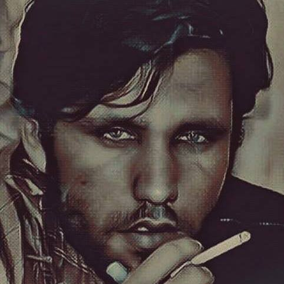

ادعای باطل
ادعای آقای نوید احمد حبیبی درباره فتح بیت المقدس کاملا غلط است
هر وقت که این ادعا خود را از طریق منایع مختلف از جمله
بی بی سی ویا افغانستان انترنشنال تایید کرد به طور تحفه برایش مانستر داده میشود

ادعای آقای نوید احمد حبیبی درباره فتح بیت المقدس کاملا غلط است
هر وقت که این ادعا خود را از طریق منایع مختلف از جمله
بی بی سی ویا افغانستان انترنشنال تایید کرد به طور تحفه برایش مانستر داده میشود